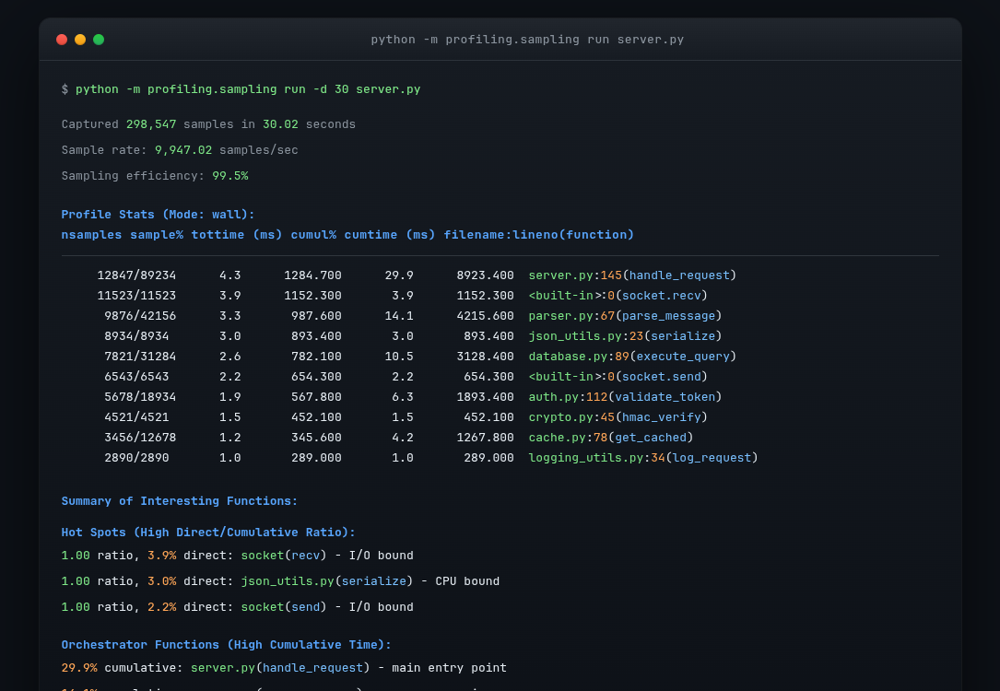
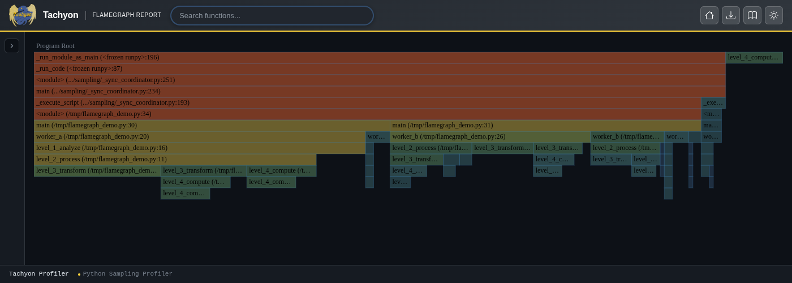
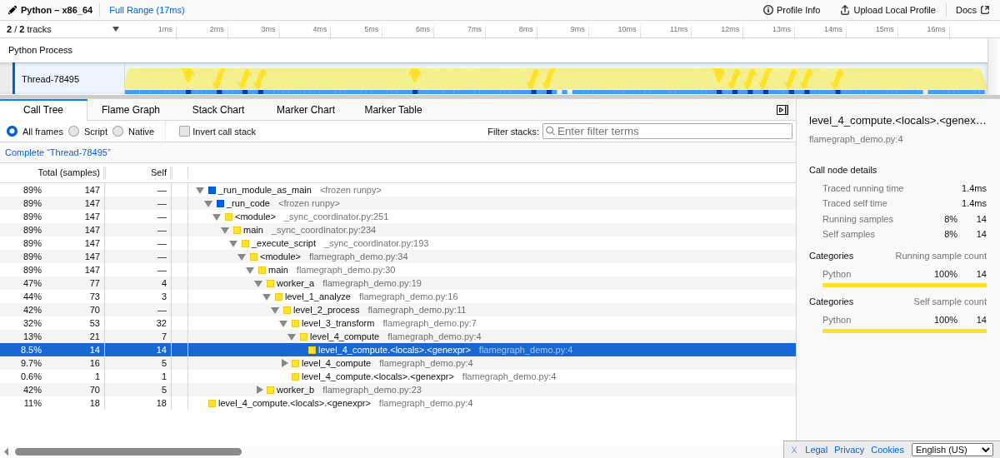
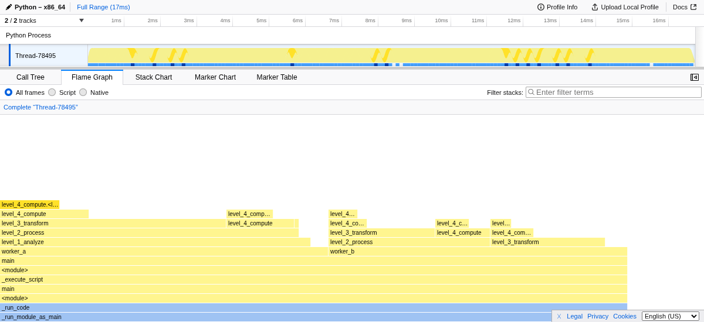
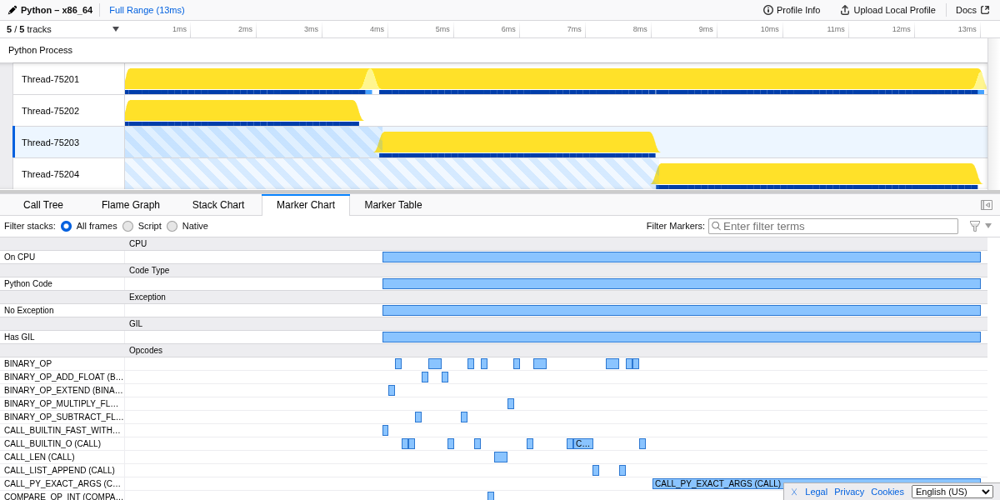
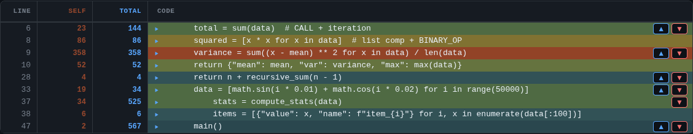
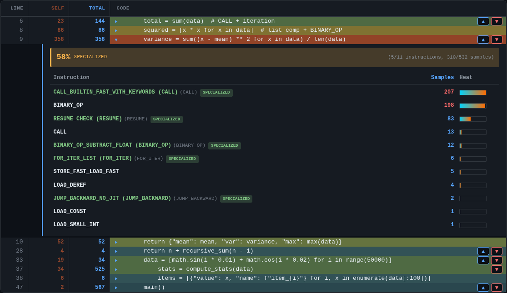
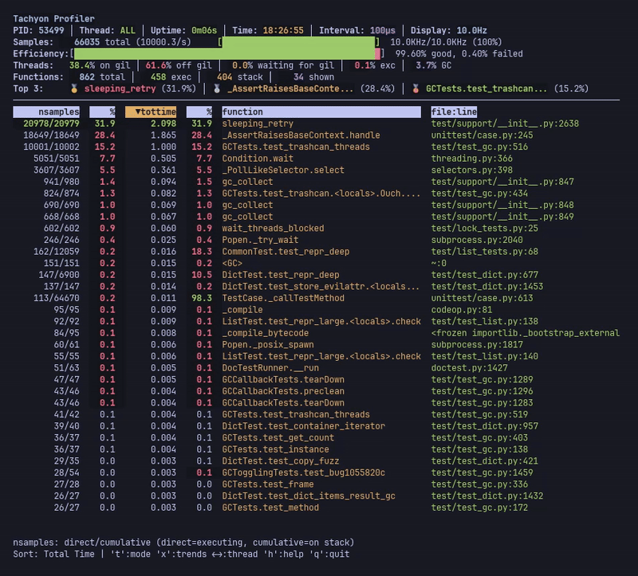

profiling.sampling — 통계적 프로파일러¶
Added in version 3.15.
소스 코드: Lib/profiling/sampling/
Tachyon 이라는 이름의 profiling.sampling 모듈은 주기적인 스택 샘플링을 통해 Python 프로그램의 통계적 프로파일링을 제공합니다. Tachyon은 코드 변경이나 재시작 없이 스크립트를 직접 실행하거나 실행 중인 모든 Python 프로세스에 연결할 수 있습니다. 샘플링이 대상 프로세스 외부에서 발생하므로 오버헤드가 거의 없으며, 따라서 Tachyon은 개발 및 운영 환경 모두에 적합합니다.
통계적 프로파일링이란 무엇입니까?¶
통계적 프로파일링은 주기적으로 호출 스택의 스냅샷을 캡처하여 프로그램 동작에 대한 그림을 그립니다. 결정론적 프로파일러가 모든 함수 호출과 반환을 인스트루먼트하는 대신, Tachyon은 일정한 간격으로 호출 스택을 읽어 현재 실행 중인 코드를 기록합니다.
이 접근 방식은 단순한 원리에 기초합니다. 상당한 CPU 시간을 소비하는 함수는 수집된 샘플에서 빈번하게 나타난다는 것입니다. Tachyon은 프로파일링 세션 동안 수천 개의 샘플을 수집하여 시간이 어디에 소요되는지에 대한 정확한 통계적 추정치를 생성합니다. 샘플이 많이 수집될수록 이 추정치는 더욱 정교해집니다.
다음 대화형 시각화는 샘플링 프로파일링이 작동하는 방식을 보여줍니다. Play 를 눌러 Python 프로그램 실행을 지켜보고, 프로파일러가 주기적으로 호출 스택의 스냅샷을 캡처하는 것을 관찰하십시오. 샘플 간격 을 조정하여 샘플링 빈도가 결과에 어떤 영향을 미치는지 확인하십시오.
시간 추정 방식¶
Tachyon 출력에 표시되는 시간 값은 직접 측정한 값이 아니라 샘플 횟수에서 도출된 추정치 입니다. Tachyon은 수집된 샘플에서 각 함수가 나타나는 횟수를 세고, 여기에 샘플링 간격을 곱하여 시간을 추정합니다.
예를 들어, 10초 동안 10kHz의 샘플링 속도로 프로파일링을 수행하면 Tachyon은 약 100,000개의 샘플을 수집합니다. 특정 함수가 5,000개 샘플(전체의 5%)에서 발견되면, Tachyon은 해당 함수가 10초 중 5%, 즉 약 500밀리초를 소비한 것으로 추정합니다. 이는 정밀한 측정치가 아니라 통계적 추정치입니다.
이 추정치의 정확도는 샘플 수에 따라 달라집니다. 100,000개의 샘플이 있을 때 5%로 표시되는 함수는 약 ±0.5%의 오차 범위를 가지지만, 단 1,000개의 샘플만 있을 경우 동일한 5% 측정값은 실제 시간의 3%에서 7% 사이를 나타낼 수 있습니다.
이것이 프로파일링 기간을 늘리고 샘플링 간격을 짧게 설정할수록 결과가 더 신뢰성 있게 나오는 이유입니다. 더 많은 샘플을 수집하기 때문입니다. 대부분의 성능 분석에서 기본 설정은 병목 지점을 파악하고 최적화 방향을 잡기에 충분한 정확도를 제공합니다.
샘플링은 통계적 방식이므로 실행 시마다 결과가 약간씩 다를 수 있습니다. 한 번의 실행에서 12%로 나타난 함수가 다음 실행에서는 11% 또는 13%로 보일 수 있습니다. 이는 정상적이며 예상된 결과입니다. 정확한 백분율보다는 전반적인 패턴에 집중하고, 실행 간의 작은 차이는 개의치 마십시오.
다른 방식을 사용해야 하는 경우¶
통계적 샘플링이 모든 상황에 이상적인 것은 아닙니다.
1초 미만으로 완료되는 매우 짧은 스크립트의 경우, 프로파일러가 신뢰할 수 있는 결과를 내기 위해 충분한 샘플을 수집하지 못할 수 있습니다. 이 경우 대신 profiling.tracing 을 사용하거나, 스크립트를 루프 안에서 실행하여 프로파일링 시간을 늘리십시오.
정확한 호출 횟수가 필요한 경우 샘플링으로는 이를 알 수 없습니다. 샘플링은 스냅샷을 통해 빈도를 추정하므로, 함수가 정확히 몇 번 호출되었는지 알아야 한다면 profiling.tracing 을 사용하십시오.
두 구현체 사이의 차이가 1~2%에 불과한 경우, 샘플링 노이즈가 실제 차이를 가릴 수 있습니다. 마이크로 벤치마크를 수행할 때는 timeit 을, 정밀한 측정이 필요할 때는 profiling.tracing 을 사용하십시오.
profiling.tracing 과의 핵심적인 차이점은 측정 방식에 있습니다. 추적(tracing) 프로파일러는 코드를 인스트루먼트하여 모든 함수 호출과 리턴을 기록합니다. 이를 통해 정확한 호출 횟수와 정밀한 타이밍을 얻을 수 있지만, 모든 함수 호출에 오버헤드가 발생합니다. 반대로 샘플링 프로파일러는 실행 방식을 수정하지 않고 외부에서 일정 간격으로 프로그램을 관찰합니다. 이 차이를 이렇게 생각하면 쉽습니다. 추적은 누군가가 당신을 따라다니며 매 걸음마다 기록하는 것과 같고, 샘플링은 1초마다 사진을 찍어 그 스냅샷들로부터 경로를 유추하는 것과 같습니다.
이러한 외부 관찰 모델 덕분에 샘플링 프로파일링은 운영 환경에서 실용적으로 사용될 수 있습니다. 대상 프로그램 내부에 인스트루먼트 코드가 실행되지 않으므로 프로그램은 원래 속도 그대로 실행되며, 샘플링 중에 프로세스가 중단되거나 일시 정지되지 않습니다. Tachyon은 프로세스가 계속 실행되는 동안 메모리에서 호출 스택을 직접 읽어옵니다. 따라서 애플리케이션이 관찰되고 있다는 사실을 모르는 상태에서 실시간 서버에 연결하여 데이터를 수집하고 분리할 수 있습니다. 단, 샘플링 사이에 완료된 매우 짧은 수명의 함수는 누락될 수 있다는 점이 트레이드오프입니다.
통계적 프로파일링은 “프로그램이 어디에서 시간을 소비하고 있는가?”라는 질문에 답하는 데 탁월합니다. 결정론적(deterministic) 방식의 프로파일링 오버헤드를 감수할 수 없는 운영 코드 내의 핫스팟과 병목 지점을 찾아내어 줍니다. 정확한 호출 횟수와 전체 호출 그래프가 필요한 경우에는 대신 profiling.tracing 을 사용하십시오.
빠른 예시¶
스크립트를 프로파일링하고 결과를 즉시 확인하기:
python -m profiling.sampling run script.py
인자가 있는 모듈을 프로파일링하기:
python -m profiling.sampling run -m mypackage.module arg1 arg2
대화형 플레임 그래프 생성하기:
python -m profiling.sampling run --flamegraph -o profile.html script.py
PID를 통해 실행 중인 프로세스에 연결하기:
python -m profiling.sampling attach 12345
실행 중인 프로세스 스택의 단일 스냅샷 출력하기:
python -m profiling.sampling dump 12345
실시간 모니터링을 위해 라이브 모드 사용(종료하려면 q 를 누르십시오):
python -m profiling.sampling run --live script.py
더 빠른 샘플링 속도로 60초 동안 프로파일링하기:
python -m profiling.sampling run -d 60 -r 20khz script.py
라인별 히트맵 생성하기:
python -m profiling.sampling run --heatmap script.py
실행 중인 바이트코드 명령어를 확인하기 위해 옵코드 수준 프로파일링 활성화하기:
python -m profiling.sampling run --opcodes --flamegraph script.py
명령어¶
Tachyon은 여러 서브 명령어를 통해 작동합니다. run 과 attach 는 일정 시간 동안 샘플을 수집하며, dump 는 단일 스냅샷을 캡처하고, replay 는 바이너리 프로파일을 다른 형식으로 변환합니다.
run 명령어¶
run 명령어는 파이썬 스크립트 또는 모듈을 실행하고 시작 시점부터 프로파일링합니다:
python -m profiling.sampling run script.py
python -m profiling.sampling run -m mypackage.module
스크립트를 프로파일링할 때 프로파일러는 대상을 서브프로세스에서 시작하고, 초기화될 때까지 기다린 후 샘플 수집을 시작합니다. -m 플래그는 대상이 모듈로 실행되어야 함을 나타냅니다(python -m 과 동일). 대상 뒤에 오는 인자들은 프로파일링되는 프로그램으로 전달됩니다:
python -m sampling_profiling run script.py --config settings.yaml
attach 명령어¶
attach 명령어는 프로세스 ID를 통해 이미 실행 중인 파이썬 프로세스에 연결합니다:
python -m profiling.sampling attach 12345
이 명령은 특히 운영 시스템의 성능 문제를 조사할 때 매우 유용합니다. 대상 프로세스는 수정이 필요 없으며 재시작할 필요도 없습니다. 프로파일러가 연결되면 지정된 시간 동안 샘플을 수집한 후 분리되어 결과를 생성합니다.
python -m profiling.sampling attach --live 12345
python -m profiling.sampling attach --flamegraph -d 30 -o profile.html 12345
대부분의 시스템에서 다른 프로세스에 연결하려면 적절한 권한이 필요합니다. 플랫폼별 요구 사항은 플랫폼 요구 사항 를 참조하십시오.
dump 명령어¶
dump 명령어는 실행 중인 프로세스의 파이썬 스택에 대한 단일 스냅샷을 인쇄하고 종료하며, 이는 트레이스백과 유사합니다:
python -m profiling.sampling dump 12345
attach 와 달리 dump 는 샘플링 루프를 실행하지 않고 스택을 한 번만 읽습니다. 이는 멈췄거나 응답이 없는 프로세스를 조사하거나, 현재 이 프로세스가 무엇을 하고 있는지 파악할 때 유용합니다.
출력은 트레이스백(가장 최근 호출이 마지막에 표시됨)과 유사하며 각 스레드에 현재 상태(메인 스레드, GIL 보유 중, CPU 실행 중, GIL 대기 중, 예외 발생, 또는 유휴 상태)를 주석으로 표시합니다.
Stack dump for PID 12345, thread 140735 (main thread, has GIL, on CPU; most recent call last):
File "server.py", line 28, in serve
await handle_request(req)
File "handler.py", line 91, in handle_request
result = expensive_call(req)
대상 소스 파일을 읽을 수 있는 경우, dump 는 각 프레임에 대한 소스 라인을 인쇄하고 현재 실행 중인 표현식을 강조 표시합니다.
attach 와 마찬가지로 dump 도 대상 프로세스의 메모리를 읽기 위한 권한이 필요합니다. 플랫폼 요구 사항 를 참조하십시오.
dump 명령은 다음 옵션들을 지원합니다.
-a,--all-threads대상 프로세스의 모든 스레드를 덤프합니다. 이 플래그가 없으면 메인 스레드만 표시됩니다.
--nativeC 확장 또는 기타 비 파이썬 코드로의 전환을 나타내는 가상의
<native>프레임을 포함합니다.--no-gc활성화된 가비지 컬렉션을 나타내는 가상의
<GC>프레임을 숨깁니다.--opcodes각 프레임에 스레드가 현재 실행 중인 바이트코드 명령어를 주석으로 추가합니다(예:
opcode=CALL_KW). 이는 적응형 인터프리터가 선택한 특수화 기능을 포함하여 명령어 수준의 조사를 수행하는 데 유용합니다.--async-awareawait경계를 가로질러 스택을 재구성합니다.dump``는 태스크 그래프를 탐색하여 태스크당 하나의 섹션을 생성하며, 서로를 기다리는 코루틴은 ``<task>마커로 구분됩니다.--async-mode {running,all}--async-aware가 활성화되었을 때 포함될 태스크를 제어합니다.running은 각 스레드에서 현재 실행 중인 태스크만 표시하며,all(dump의 기본값)은 대기 상태로 중단된 태스크도 포함합니다.attach는 이 플래그의 기본값이running이며,dump가all을 기본값으로 하는 이유는 단일 스냅샷이 전체 태스크 그래프를 보여줄 때 가장 유용하기 때문입니다.--blocking스택을 읽는 동안 대상의 모든 스레드를 일시 중지하고 그 후에 재개합니다. 이 옵션은 대상을 잠시 멈추는 대신 완전히 일관된 스냅샷을 보장합니다. 이 기능이 없으면
dump가 실행되는 동안 타겟이 계속 실행되므로 속도는 빠르지만 간혹 깨진(torn) 스택이 생성될 수 있습니다.
replay 명령어¶
replay 명령어는 바이너리 프로파일 파일을 다른 출력 형식으로 변환합니다:
python -m profiling.sampling replay profile.bin
python -m profiling.sampling replay --flamegraph -o profile.html profile.bin
이 명령은 바이너리 형식으로 캡처한 프로파일링 데이터를 나중에 분석하거나 시각화용 형식으로 변환하려는 경우 유용합니다. 바이너리 프로파일은 다시 프로파일링할 필요 없이 다양한 형식으로 여러 번 재생(replay)할 수 있습니다.
# pstats으로 바이너리 변환 (기본값, 표준 출력에 표시)
python -m profiling.sampling replay profile.bin
# 바이너리를 flame graph로 변환
python -m profiling.sampling replay --flamegraph -o output.html profile.bin
# Firefox Profiler용 gecko 형식으로 바이너리 변환
python -m profiling.sampling replay --gecko -o profile.json profile.bin
# 바이너리를 heatmap으로 변환
python -m profiling.sampling replay --heatmap -o my_heatmap profile.bin
운영 환경에서의 프로파일링¶
샘플링 프로파일러는 운영 환경에서 사용하기에 적합하도록 설계되었습니다. 코드에 인스트루먼트를 추가하는 대신 외부에서 메모리를 읽기 때문에 대상 프로세스에 측정 가능한 수준의 오버헤드를 가하지 않습니다. 따라서 대상 애플리케이션은 전체 속도로 실행되며 자신이 프로파일링되고 있다는 사실을 알지 못합니다.
운영 시스템을 프로파일링할 때는 다음 지침을 유념하십시오:
빠른 결과를 얻으려면 짧은 시간(10~30초)으로 시작하고, 더 높은 통계적 정확도가 필요한 경우에만 시간을 늘리십시오. 기본적으로 프로파일링은 대상 프로세스가 완료될 때까지 실행되며, 이는 일반적으로 주요 핫스팟을 식별하기에 충분합니다.
가능하면 피크 트래픽이 아닌 일반적인 부하 상태에서 프로파일링을 수행하십시오. 비정상적인 급증(spike) 시기에 수집된 프로파일보다 정상 운영 중에 수집된 프로파일이 해석하기가 더 쉽습니다.
프로파일러 자체는 실행되는 머신의 CPU를 일부 소비하지만(대상 프로세스는 아님), 동일한 머신에서는 이 영향이 보통 무시할 수 있는 수준입니다. 원격 프로세스를 프로파일링하는 경우 네트워크 지연이 대상에 영향을 주지 않습니다.
운영 환경의 결과는 데이터 크기, 동시 부하 또는 캐싱 효과로 인해 개발 환경과 다를 수 있습니다. 이는 예상된 결과이며 바로 이러한 부분을 파악하는 것이 목표인 경우가 많습니다.
플랫폼 요구 사항¶
프로파일러는 스택 트레이스를 캡처하기 위해 대상 프로세스의 메모리를 읽습니다. 이 기능은 대부분의 운영체제에서 높은 권한을 요구합니다.
Linux
Linux에서 프로파일러는 대상 프로세스의 메모리를 읽기 위해 ptrace 또는 process_vm_readv 를 사용합니다. 이를 위해서는 보통 다음 중 하나가 필요합니다.
root 권한으로 실행
CAP_SYS_PTRACE권한 보유Yama ptrace 범위 조정:
/proc/sys/kernel/yama/ptrace_scope
기본값인 ptrace_scope 1은 ptrace를 부모 프로세스로만 제한합니다. 동일한 사용자가 소유한 모든 프로세스에 연결할 수 있도록 하려면 이를 0으로 설정하십시오:
echo 0 | sudo tee /proc/sys/kernel/yama/ptrace_scope
macOS
macOS에서 프로파일러는 대상 프로세스에 액세스하기 위해 task_for_pid() 를 사용합니다. 이를 위해서는 다음 중 하나가 필요합니다.
root 권한으로 실행
프로파일러 바이너리가
com.apple.security.cs.debugger권한(entitlement)을 보유함시스템 무결성 보호(SIP) 비활성화 (권장되지 않음)
Windows
Windows에서 프로파일러는 다른 프로세스의 메모리를 읽기 위해 관리자 권한 또는 SeDebugPrivilege 권한이 필요합니다.
버전 호환성¶
프로파일러와 대상 프로세스는 동일한 파이썬 마이너 버전(예: 둘 다 Python 3.15)에서 실행되어야 합니다. Python 3.14에서 Python 3.15 프로세스에 연결하는 것은 지원되지 않습니다.
사전 출시 버전(pre-release) 파이썬에 대해서는 추가 제한 사항이 적용됩니다. 프로파일러 또는 대상 중 하나라도 사전 출시 버전(alpha, beta 또는 release candidate)을 사용하는 경우, 둘 다 정확히 동일한 버전을 실행해야 합니다.
free-threaded 파이썬 빌드에서 프로파일러는 free-threaded 빌드에서 표준 빌드로 또는 그 반대의 경우로 연결할 수 없습니다.
샘플링 구성¶
다양한 출력 형식과 시각화 옵션을 살펴보기 전에 샘플링 프로세스 자체를 구성하는 방법을 이해하는 것이 중요합니다. 프로파일러는 샘플 수집 빈도, 프로파일링 실행 시간, 관찰할 스레드, 각 샘플에서 캡처할 추가 컨텍스트를 제어하는 여러 옵션을 제공합니다.
기본 구성은 대부분의 사용 사례에 잘 작동합니다:
옵션 |
기본값 |
|---|---|
|
1 kHz |
|
완료될 때까지 실행 |
|
메인 스레드만 |
|
|
|
가비지 수거(GC) 활성화 시 |
|
월 클락 모드(모든 샘플 기록) |
|
비활성화 |
|
비활성화 |
|
비활성화 (비차단 샘플링) |
샘플링 속도 및 기간¶
가장 기본적인 두 가지 매개변수는 샘플링 속도와 기간입니다. 이 두 값은 프로파일링 세션 동안 수집될 샘플의 총 개수를 결정합니다.
--sampling-rate 옵션(-r)은 샘플이 수집되는 빈도를 설정합니다. 기본값은 1 kHz(초당 1,000개 샘플)입니다:
python -m profiling.sampling run -r 20khz script.py
높은 속도는 더 많은 샘플을 캡처하고 더 세밀한 데이터를 제공하지만 프로파일러의 CPU 사용량이 약간 증가합니다. 낮은 속도는 프로파일러 오버헤드를 줄이지만 수명이 짧은 함수를 놓칠 수 있습니다. 대부분의 애플리케이션에서 기본 속도는 정확성과 오버헤드 사이에서 적절한 균형을 제공합니다.
--duration 옵션(-d)은 프로파일링을 수행할 시간을 초 단위로 설정합니다. 기본적으로 프로파일링은 대상 프로세스가 종료되거나 중단될 때까지 계속됩니다:
python -m profiling.sampling run -d 60 script.py
특정 기간을 지정하는 것은 오래 실행되는 프로세스에 연결하거나 특정 시간 범위 내로 프로파일링을 제한하고 싶을 때 유용합니다. 스크립트를 프로파일링할 때는 끝까지 실행되는 기본 동작이 보통 적합합니다.
스레드 선택¶
파이썬 프로그램은 threading 모듈을 통해 명시적으로 또는 스레드 풀을 관리하는 라이브러리를 통해 암묵적으로 여러 스레드를 사용하는 경우가 많습니다.
기본적으로 프로파일러는 메인 스레드만 샘플링합니다. --all-threads 옵션(-a)을 사용하면 프로세스의 모든 스레드를 샘플링할 수 있습니다:
python -m profiling.sampling run -a script.py
다중 스레드 프로파일링을 통해 작업이 여러 스레드에 어떻게 분산되는지 파악하고, 차단되거나 자원이 부족한(starved) 스레드를 식별할 수 있습니다. 각 스레드의 샘플은 출력 결과에 통합되며 일부 형식에서는 스레드별로 필터링이 가능합니다. 이 옵션은 동시성 문제를 조사하거나 작업이 스레드 풀에 분산되는 경우 특히 유용합니다.
차단(Blocking) 모드¶
기본적으로 Tachyon은 대상 프로세스를 중단하지 않고 메모리를 읽습니다. 이러한 비차단(non-blocking) 방식은 대다수의 프로파일링 시나리오에 이상적이며, 이는 대상 애플리케이션에 거의 제로에 가까운 오버헤드를 가하기 때문입니다. 즉, 분석되는 프로그램이 원래 속도대로 실행되며 자신이 관찰되고 있다는 것을 알지 못합니다.
그러나 비차단 샘플링은 수많은 제너레이터나 코루틴이 yield 지점 사이를 빠르게 전환하는 애플리케이션이나, 함수가 단일 스택 읽기의 시작과 끝 사이에 진입하고 나가는 등 호출 스택이 매우 빠르게 변하는 프로그램에서 가끔 불완전하거나 일관되지 않은 스택 트레이스를 생성할 수 있습니다. 이로 인해 서로 다른 실행 상태의 프레임이 섞이거나 실제 존재하지 않았던 프레임이 포함된 재구성된 스택이 결과로 나올 수 있습니다.
이러한 경우를 위해 --blocking 옵션을 사용하면 매 샘플링 시마다 대상 프로세스를 일시 중지합니다:
python -m profiling.sampling run --blocking script.py
python -m profiling.sampling attach --blocking 12345
차단 모드가 활성화되면 프로파일러는 대상 프로세스를 일시 중지하고 스택을 읽은 후 다시 재개합니다. 이를 통해 캡처된 각 스택이 해당 시점에 프로세스가 수행하던 동작에 대한 정확하고 일관된 스냅샷임을 보장할 수 있습니다. 대신, 프로세스가 반복적으로 중단되므로 실행 속도가 느려지는 트레이드오프가 발생합니다.
경고
차단 모드와 함께 매우 높은 샘플링 속도(낮은 --interval 값)를 사용하지 마십시오. 프로세스를 일시 중단하고 재개하는 데는 시간이 소요되므로, 샘플링 간격이 너무 짧으면 대상 프로세스가 실행되는 시간보다 중단된 상태로 머무는 시간이 더 많아질 수 있습니다. 차단 모드에서는 1000 마이크로초(1밀리초) 이상의 간격을 권장합니다. 기본값인 100 마이크로초 간격은 대상 애플리케이션에 눈에 띄는 성능 저하를 유발할 수 있습니다.
프로파일 결과에서 일관되지 않은 스택이 관찰될 때만 차단 모드를 사용하십시오(특히 제너레이터나 코루틴이 많이 포함된 코드의 경우). 대부분의 애플리케이션에서는 기본 비차단 모드가 대상 프로세스에 영향 없이 정확한 결과를 제공합니다.
특수 프레임¶
프로파일러는 각 샘플을 채취하는 순간 인터프리터가 수행 중인 작업에 대한 추가 정보를 제공하기 위해 캡처된 스택에 인위적인 프레임을 삽입할 수 있습니다. 이러한 합성 프레임은 그렇지 않으면 구분하기 어려운 다양한 유형의 실행 과정을 식별하는 데 도움이 됩니다.
--native 옵션은 파이썬이 C 코드(확장 모듈, 내장 함수 또는 인터프리터 자체)를 호출할 때 <native> 프레임을 추가하여 이를 표시합니다:
python -m profiling.sampling run --native script.py
이 프레임은 파이썬 코드에서 소요된 시간과 네이티브 라이브러리에서 소요된 시간을 구분하는 데 도움을 줍니다. 이 옵션이 없으면 네이티브 코드 실행은 해당 호출을 수행한 파이썬 함수의 실행 시간으로 표시됩니다. 이는 NumPy나 데이터베이스 드라이버와 같은 C 확장 기능을 많이 사용하는 코드를 최적화할 때 유용합니다.
기본적으로 프로파일러는 가비지 수거(GC)가 활성화된 경우 <GC> 프레임을 포함합니다. --no-gc 옵션을 사용하면 이러한 프레임이 표시되지 않습니다:
python -m profiling.sampling run --no-gc script.py
GC 프레임은 가비지 수거가 상당한 시간을 소모하는 프로그램을 식별하는 데 도움을 주며, 이는 최적화할 가치가 있는 메모리 할당 패턴을 나타낼 수 있습니다. <GC> 프레임에서 많은 시간이 소요되는 것을 확인했다면, 객체 할당률을 조사하거나 객체 풀링(object pooling) 사용을 고려해 보십시오.
Opcode 인식 프로파일링¶
--opcodes 옵션은 각 샘플에서 어떤 파이썬 바이트코드 명령어가 실행 중인지 캡처하는 명령어 수준의 프로파일링을 활성화합니다:
python -m profiling.sampling run --opcodes --flamegraph script.py
이 기능은 적응형 특수화(adaptive specialization) 최적화를 포함하여 Python 바이트코드 실행에 대한 가시성을 제공합니다. LOAD_ATTR 과 같은 일반적인 명령어가 런타임에 LOAD_ATTR_INSTANCE_VALUE 와 같이 더 효율적인 변체로 특수화될 때, 프로파일러는 특수화된 이름과 기본 명령어를 모두 표시합니다.
Opcode 정보는 여러 출력 형식으로 표시됩니다:
Flame graphs: 프레임을 마우스로 가리키면 바이트코드 명령 분해 내용이 포함된 툴팁이 표시되며, 해당 함수에서 어떤 opcode가 시간을 소비했는지 보여줍니다.
Heatmap: 소스 라인별로 확장 가능한 바이트코드 패널이 나타나며, 특수화 비율과 함께 명령 분해 내용을 표시합니다.
Live mode: opcode 패널이 선택한 함수에 대한 명령 수준의 통계를 표시하며, 키보드 탐색을 통해 접근할 수 있습니다.
Gecko format: opcode 전환이 Firefox Profiler 타임라인에서 간격 마커로 출력됩니다.
이러한 상세 수준은 특히 다음 경우에 유용합니다:
Python의 적응형 특수화가 성능에 미치는 영향 파악
최적화로 이득을 볼 수 있는 핫 바이트코드 명령 식별
명령 수준에서 다양한 코드 패턴의 효과 분석
바이트코드 수준에서 발생하는 성능 문제 디버깅
The --opcodes 옵션은 --live, --flamegraph, --heatmap, 및 --gecko 형식과 호환됩니다. 이 옵션은 opcode 정보를 저장하기 위해 추가 메모리가 필요하며 샘플링 성능이 약간 저하될 수 있지만, Python 실행 모델에 대한 전례 없는 가시성을 제공합니다.
실시간 통계¶
The --realtime-stats 옵션은 프로파일링 중에 샘플링 속도 통계를 표시합니다:
python -m profiling.sampling run --realtime-stats script.py
이 기능은 실제로 달성된 샘플링 속도를 보여주며, 프로파일러가 따라가지 못할 경우 요청한 값보다 낮을 수 있습니다. 이 통계는 프로파일링이 올바르게 작동하고 충분한 샘플이 수집되고 있는지 확인하는 데 도움이 됩니다. 이러한 지표를 해석하는 방법에 대한 자세한 내용은 샘플링 효율 를 참조하십시오.
서브프로세스 프로파일링¶
The --subprocesses 옵션은 대상에 의해 생성된 서브프로세스의 자동 프로파일링을 활성화합니다:
python -m profiling.sampling run --subprocesses script.py
python -m profiling.sampling attach --subprocesses 12345
이 옵션을 활성화하면 프로파일러는 대상 프로세스에서 자식 프로세스가 생성되는지 모니터링합니다. 새로운 Python 자식 프로세스가 감지되면 이를 프로파일링하기 위해 별도의 프로파일러 인스턴스가 자동으로 실행됩니다. 이는 multiprocessing, subprocess, concurrent.futures 와 함께 ProcessPoolExecutor 또는 기타 프로세스 생성 메커니즘을 사용하는 애플리케이션에 유용합니다.
from concurrent.futures import ProcessPoolExecutor
import math
def compute_factorial(n):
total = 0
for i in range(50):
total += math.factorial(n)
return total
if __name__ == "__main__":
numbers = [5000 + i * 100 for i in range(50)]
with ProcessPoolExecutor(max_workers=4) as executor:
results = list(executor.map(compute_factorial, numbers))
print(f"Computed {len(results)} factorials")
python -m profiling.sampling run --subprocesses --flamegraph worker_pool.py
이 명령은 메인 프로세스와 각 워커 프로세스에 대해 별도의 플레임 그래프를 생성합니다: flamegraph_<main_pid>.html, flamegraph_<worker1_pid>.html 등.
각 서브프로세스는 고유한 출력 파일을 받습니다. 파일 이름은 지정된 출력 경로(또는 기본값)에서 파생되며 서브프로세스의 프로세스 ID가 추가됩니다:
-o profile.html``을 지정하면, 서브프로세스는 ``profile_12345.html,profile_12346.html등의 파일을 생성합니다.기본 출력의 경우, 서브프로세스는
flamegraph_12345.html과 같은 파일이나heatmap_12345와 같은 디렉토리를 생성합니다.pstats 형식(기본값 stdout)의 경우, 서브프로세스는
profile_12345.pstats와 같은 파일을 생성합니다.
서브프로세스 프로파일러는 부모로부터 대부분의 샘플링 옵션(샘플링 속도, 지속 시간, 스레드 선택, 네이티브 프레임, GC 프레임, async-aware 모드 및 출력 형식)을 상속받습니다. 모든 Python 자손 프로세스는 손자 프로세스와 그 이상의 후손을 포함하여 재귀적으로 프로파일링됩니다.
서브프로세스 감지는 대상 프로세스의 새로운 자손을 주기적으로 스캔하고, 각 새 프로세스가 Python 실행 구조를 포함하는 Python 프로세스인지 확인하여 작동합니다. Python이 아닌 서브프로세스(셸 명령 또는 외부 도구 등)는 무시됩니다.
많은 프로세스를 생성하는 프로그램에서 리소스 고갈을 방지하기 위해 동시에 실행되는 서브프로세스 프로파일러의 제한은 100개입니다. 이 한도에 도달하면 추가적인 서브프로세스는 프로파일링되지 않으며 경고 메시지가 출력됩니다.
The --subprocesses 옵션은 --live 모드와 호환되지 않는데, 이는 live 모드가 여러 개의 프로파일러를 동시에 표시할 수 없는 대화형 터미널 인터페이스를 사용하기 때문입니다.
샘플링 효율¶
샘플링 효율 지표는 수집된 데이터의 품질을 평가하는 데 도움이 됩니다. 이 지표는 프로파일러의 터미널 출력과 플레임 그래프 사이드바에 나타납니다.
Sampling efficiency 은 성공한 샘플 시도 비율입니다. 각 샘플 시도는 메모리에서 대상 프로세스의 호출 스택을 읽습니다. 컨텍스트 스위칭 중에 발생하거나 인터프리터가 내부 구조를 업데이트하는 동안과 같이 프로세스가 일관되지 않은 상태에 있을 때 시도가 실패할 수 있습니다. 효율이 낮다는 것은 시스템 부하나 너무 공격적인 간격 설정으로 인해 프로파일러가 요청된 샘플링 속도를 따라가지 못했음을 나타낼 수 있습니다.
Missed samples 는 수집되지 않은 예상 샘플의 비율입니다. 설정된 간격과 기간에 따라 프로파일러는 특정 수의 샘플을 수집할 것으로 예상합니다. 시스템 부하가 심한 경우와 같이 프로파일러가 예정보다 뒤처지면 일부 샘플이 누락될 수 있습니다. 낮은 비율의 누락은 정상이며 프로파일의 통계적 정확성에 큰 영향을 미치지 않습니다.
두 지표 모두 정보 제공용입니다. 몇 차례의 시도 실패나 샘플 누락이 있더라도 충분한 양의 샘플이 수집되었다면 프로파일은 통계적으로 유효합니다. 프로파일러는 포착된 실제 샘플 수를 보고하며, 이를 통해 분석에 데이터가 충분한지 판단할 수 있습니다.
프로파일링 모드¶
샘플링 프로파일러는 기록될 샘플을 제어하는 네 가지 모드를 지원합니다. 모드는 프로파일이 측정하는 항목(전체 경과 시간, CPU 실행 시간, 글로벌 인터프리터 락 점유 시간 또는 예외 처리)을 결정합니다.
Wall-clock 모드¶
Wall-clock 모드(--mode=wall)는 스레드가 무엇을 하든 관계없이 모든 샘플을 캡처합니다. 이것이 기본 모드이며 프로그램 실행 중에 시간이 어디에 소요되는지에 대한 전체적인 그림을 제공합니다:
python -m profiling.sampling run --mode=wall script.py
Wall-clock 모드에서는 스레드가 Python 코드를 활발하게 실행 중이든, I/O를 기다리거나, 락에 걸려 있거나, 대기(sleep) 상태이든 관계없이 샘플을 기록합니다. 따라서 Wall-clock 프로파일링은 대기 시간을 포함하여 프로그램의 전체 시간 분포를 파악하는 데 이상적입니다.
프로그램이 I/O 작업, 네트워크 호출 또는 sleep에 상당한 시간을 소비한다면, Wall-clock 모드는 이러한 대기 시간을 호출 함수에 할당된 시간으로 표시합니다. 이는 종단 간 지연 시간(end-to-end latency)을 최적화할 때 정확히 필요한 정보인 경우가 많습니다.
CPU 모드¶
CPU 모드(--mode=cpu)는 스레드가 실제로 CPU 코어에서 실행될 때만 샘플을 기록합니다:
python -m profiling.sampling run --mode=cpu script.py
스레드가 대기 중이거나 I/O 또는 락을 기다리는 동안 수집된 샘플은 버려집니다. 결과 프로파일은 유휴 시간을 제외하고 CPU 사이클이 어디에서 소모되는지 보여줍니다.
CPU 모드는 I/O 대기에 방해받지 않고 계산상의 핫스팟에 집중하고자 할 때 유용합니다. 프로그램이 연산과 네트워크 호출 사이를 오가는 경우, CPU 모드는 어떤 계산 섹션이 가장 비용이 많이 드는지 밝혀줍니다.
Wall-clock과 CPU 프로파일 비교¶
Wall-clock과 CPU 모드 프로파일을 모두 실행하면 함수의 시간이 계산에 소모되는지 아니면 대기 중인지를 파악할 수 있습니다.
두 프로파일 모두에서 특정 함수가 두드러지게 나타난다면, 이는 실제로 CPU를 사용하여 연산하는 핵심 영역입니다. 최적화는 알고리즘 개선이나 더 효율적인 코드에 집중해야 합니다.
Wall-clock 모드에서는 높게 나타나지만 CPU 모드에서는 낮거나 나타나지 않는 함수는 I/O 바운드이거나 대기 중인 상태입니다. 이 함수는 네트워크, 디스크, 락 또는 sleep에 대부분의 시간을 소비합니다. 이 경우 CPU 최적화는 도움이 되지 않으며, 대신 비동기 I/O, 커넥션 풀링 또는 대기 시간 단축을 고려해야 합니다.
import time
def do_sleep():
time.sleep(2)
def do_compute():
sum(i**2 for i in range(1000000))
if __name__ == "__main__":
do_sleep()
do_compute()
python -m profiling.sampling run --mode=wall script.py # do_sleep ~98%, do_compute ~1%
python -m profiling.sampling run --mode=cpu script.py # do_sleep 없음, do_compute가 지배적
GIL 모드¶
GIL 모드(--mode=gil)는 스레드가 Python의 글로벌 인터프리터 락(GIL)을 보유하고 있을 때만 샘플을 기록합니다:
python -m profiling.sampling run --mode=gil script.py
GIL은 Python 바이트코드를 실행하는 동안에만 유지됩니다. Python이 C 확장 기능을 호출하거나, I/O 작업을 수행하거나, 네이티브 코드를 실행할 때는 일반적으로 GIL을 해제합니다. 즉, GIL 모드는 네이티브 라이브러리에서의 시간을 제외하고 특히 Python 코드를 실행하는 데 소요된 시간만을 효과적으로 측정합니다.
멀티스레드 프로그램에서 GIL 모드는 어떤 코드가 다른 스레드의 Python 바이트코드 실행을 방해하는지 보여줍니다. 한 번에 하나의 스레드만 GIL을 보유할 수 있으므로, GIL 모드 프로파일에서 자주 나타나는 함수는 인터프리터를 독점하고 있는 것입니다.
GIL 모드는 “어떤 함수가 GIL을 독점하는가?” 및 “왜 다른 스레드가 굶주리고(starving) 있는가?”와 같은 질문에 답하는 데 도움이 됩니다. 또한 싱글스레드 프로그램에서 Python 실행 시간과 C 확장 또는 I/O에서 소요된 시간을 구분하는 데도 유용할 수 있습니다.
import hashlib
def hash_work():
# C extension - 계산 중 GIL 해제
for _ in range(200):
hashlib.sha256(b"data" * 250000).hexdigest()
def python_work():
# Pure Python - 계산 중 GIL 유지
for _ in range(3):
sum(i**2 for i in range(1000000))
if __name__ == "__main__":
hash_work()
python_work()
python -m profiling.sampling run --mode=cpu script.py # hash_work ~42%, python_work ~38%
python -m profiling.sampling run --mode=gil script.py # hash_work ~5%, python_work ~60%
예외 모드¶
예외 모드(--mode=exception)는 스레드가 활성 예외를 가지고 있을 때만 샘플을 기록합니다:
python -m profiling.sampling run --mode=exception script.py
샘플은 두 가지 상황에서 기록됩니다. 예외가 호출 스택을 따라 전파되는 경우(raise 이후부터 잡히기 전까지), 또는 예외 정보가 여전히 스레드 상태에 남아 있는 except 블록 내부에서 코드가 실행 중인 경우입니다.
다음 예제는 어떤 코드 영역이 캡처되는지 보여줍니다:
def example():
try:
raise ValueError("error") # 캡처됨: 발생 중인 예외
except ValueError:
process_error() # 캡처됨: except 블록 내부
finally:
cleanup() # 캡처 안 됨: 이미 처리된 예외
def example_propagating():
try:
try:
raise ValueError("1020")
finally:
cleanup() # 캡처됨: 전파되는 중인 예외
except ValueError:
pass
def example_no_exception():
try:
do_work()
finally:
cleanup() # 캡처 안 됨: 관련 예외 없음
finally 블록은 예외가 활발하게 전파되는 중에만 캡처됩니다. except 블록의 실행이 끝나면 Python은 후속 finally 블록을 실행하기 전에 예외 정보를 지웁니다. 마찬가지로, 정상적인 실행 과정에서 수행되는 finally 블록(예외가 발생하지 않은 경우)은 예외 상태가 존재하지 않으므로 캡처되지 않습니다.
이 모드는 프로그램이 오류를 처리하는 데 시간을 얼마나 소비하는지 파악하는 데 유용합니다. 예외 처리는 흐름 제어를 위해 예외를 사용하는 코드(예: 반복자에서의 StopIteration)나 많은 오류 조건이 발생하는 애플리케이션(예: 연결 실패를 처리하는 네트워크 서버)에서 상당한 오버헤드의 원인이 될 수 있습니다.
예외 모드는 “예외 처리에 얼마나 많은 시간이 소요되는가?” 또는 “어떤 예외 핸들러가 비용이 가장 많이 드는가?”와 같은 질문에 답하는 데 도움이 됩니다. 이 모드는 예외를 적절하게 처리하더라도, 많은 예외를 잡아 처리하는 코드에서 숨겨진 성능 비용을 밝혀낼 수 있습니다. 예를 들어, 파싱 라이브러리가 내부적으로 형식이 잘못되었음을 알리기 위해 예외를 사용하는 경우, 호출하는 쪽에서 예외를 전혀 인식하지 못하더라도 이 모드는 해당 핸들러에서 소비된 시간을 캡처합니다.
출력 형식¶
프로파일러는 각각 다른 분석 워크플로우에 적합한 여러 형식을 제공합니다. 형식은 명령줄 플래그로 선택하며, 출력은 형식에 따라 표준 출력(stdout), 파일 또는 디렉토리로 전송됩니다.
pstats 형식¶
pstats 형식(--pstats)은 결정론적 프로파일러가 생성하는 것과 유사한 텍스트 테이블을 생성합니다. 이것이 기본 출력 형식입니다:
python -m profiling.sampling run script.py
python -m profiling.sampling run --pstats script.py
{kind=link}

pstats 형식은 함수 핫스팟, 샘플 수 및 시간 추정치를 색상으로 구분한 표로 프로파일링 결과를 표시합니다.¶
출력은 기본적으로 표준 출력에 나타납니다:
Profile Stats (Mode: wall):
nsamples sample% tottime (ms) cumul% cumtime (ms) filename:lineno(function)
234/892 11.7% 234.00 44.6% 892.00 server.py:145(handle_request)
156/156 7.8% 156.00 7.8% 156.00 <built-in>:0(socket.recv)
98/421 4.9% 98.00 21.1% 421.00 parser.py:67(parse_message)
열은 샘플링 횟수와 추정 시간을 나타냅니다:
nsamples:
direct/cumulative(예:10/50)로 표시됩니다. 직접(Direct) 샘플은 함수가 스택 최상단에 위치하여 활발하게 실행 중일 때를 의미합니다. 누적(Cumulative) 샘플은 함수가 호출한 다른 함수들을 기다리는 상태를 포함하여 스택의 어느 곳에서나 나타났을 때를 의미합니다. 어떤 함수의 수치가10/50이라면, 10번은 직접 실행되었고 총 50번은 콜 스택에 포함되었다는 뜻입니다.sample% 및 cumul%: 각각 직접 샘플과 누적 샘플의 전체 샘플 대비 비율입니다.
tottime 및 cumtime: 샘플 수와 프로파일링 기간을 기반으로 추정된 실제 소요 시간(wall-clock time)입니다. 시간 단위는 값의 크기에 따라 자동으로 선택됩니다: 큰 값은 초, 중간 값은 밀리초, 작은 값은 마이크로초로 표시됩니다.
출력에는 각 열에 대한 설명이 포함된 범례와 다음을 강조하는 주요 함수의 요약이 포함됩니다:
Hot spots: 직접/누적 샘플 비율이 높은(비율이 1.0에 가까운) 함수입니다. 이러한 함수는 호출되는 함수를 기다리기보다 자신의 코드를 실행하는 데 대부분의 시간을 소비합니다. 높은 비율은 CPU 시간이 실제로 소모되는 지점을 나타냅니다.
Indirect calls: 누적 샘플과 직접 샘플 사이에 큰 차이가 있는 함수입니다. 이들은 작업을 다른 함수에 위임하는 조율(orchestration) 역할을 하는 함수들입니다. 스택에는 자주 등장하지만 최상단에 위치하는 경우는 드뭅니다.
Call magnification: 누적 샘플이 직접 샘플을 훨씬 초과하는(높은 누적/직접 배수) 함수입니다. 이들은 많은 호출 체인 내에서 깊숙한 곳에 위치하며 빈번하게 중첩되는 함수들입니다.
범례와 요약 섹션을 모두 생략하려면 --no-summary 를 사용하십시오.
pstats 출력을 표준 출력 대신 바이너리 파일로 저장하려면:
python -m profiling.sampling run -o profile.pstats script.py
pstats 형식은 출력을 제어하기 위한 여러 옵션을 지원합니다. --sort 옵션은 결과 정렬에 사용될 열을 결정합니다:
python -m profiling.sampling run --sort=tottime script.py
python -m profiling.sampling run --sort=cumtime script.py
python -m profiling.sampling run --sort=nsamples script.py
--limit 옵션은 출력을 상위 N개 항목으로 제한합니다:
python -m profiling.sampling run --limit=30 script.py
--no-summary 옵션은 통계 테이블 앞의 헤더 요약을 생략합니다.
Collapsed stacks 형식¶
Collapsed stacks 형식(--collapsed)은 고유한 호출 스택마다 한 줄을 생성하며, 해당 스택이 샘플링된 횟수를 함께 표시합니다:
python -m profiling.sampling run --collapsed script.py
출력은 다음과 같은 형태입니다:
main;process_data;parse_json;decode_utf8 42
main;process_data;parse_json 156
main;handle_request;send_response 89
각 줄에는 아래에서 위로 올라가는 호출 스택을 나타내는 세미콜론으로 구분된 함수 이름과 공백, 그리고 샘플 수가 포함됩니다. 이 형식은 외부 플레임 그래프 도구, 특히 Brendan Gregg의 flamegraph.pl 스크립트와 호환되도록 설계되었습니다.
Collapsed stacks에서 플레임 그래프를 생성하려면:
python -m profiling.sampling run --collapsed script.py > stacks.txt
flamegraph.pl stacks.txt > profile.svg
생성된 SVG는 모든 웹 브라우저에서 볼 수 있으며, 특정 호출 경로를 클릭하여 확대할 수 있는 인터랙티브 시각화 기능을 제공합니다.
Flame graph 형식¶
Flame graph 형식(--flamegraph)은 인터랙티브 플레임 그래프 시각화가 포함된 독립적인 HTML 파일을 생성합니다:
python -m profiling.sampling run --flamegraph script.py
python -m profiling.sampling run --flamegraph -o profile.html script.py
{kind=link}

플레임 그래프 시각화는 호출 스택을 중첩된 사각형으로 표시하며, 너비는 소요 시간에 비례합니다. 사이드바에는 실행 시간 통계, GIL 메트릭 및 핫스팟 함수가 표시됩니다.¶
대화형 예제! 를 사용해 보세요:
출력 파일이 지정되지 않으면, 프로파일러는 프로세스 ID를 기반으로 파일 이름을 생성합니다(예: flamegraph.12345.html).
생성된 HTML 파일은 외부 의존성이 없으며 웹 브라우저에서 바로 열 수 있습니다. 시각화는 호출 스택을 소요 시간에 비례하는 너비의 중첩된 사각형으로 표시합니다. 사각형 위에 마우스를 올리면 소스 코드 컨텍스트를 포함한 해당 함수의 상세 정보가 표시되며, 클릭하면 해당 부분의 호출 트리로 확대됩니다.
플레임 그래프 인터페이스에는 다음이 포함됩니다:
프로파일 요약, 스레드 통계, 샘플링 효율성 메트릭(참조: 샘플링 효율), 그리고 상위 핫스팟 함수를 보여주는 사이드바
함수 이름 일치 및
file.py:42라인 패턴을 모두 지원하는 검색 기능드롭다운을 통한 스레드별 필터링
다크/라이트 테마 전환 (설정은 세션 간에 유지됨)
현재 화면을 저장하기 위한 SVG 내보내기
스레드 통계 섹션은 다음과 같은 실행 동작 메트릭을 표시합니다:
GIL Held: 스레드가 전역 인터프리터 록(global interpreter lock)을 점유하고 있는 샘플의 비율 (활발하게 실행 중인 파이썬 코드)
GIL Released: 어떤 스레드도 GIL을 점유하지 않은 샘플의 비율
Waiting GIL: 스레드가 GIL을 획득하기 위해 대기 중인 샘플의 비율
GC: 가비지 수집(garbage collection) 중에 발생한 샘플의 비율
이 통계는 GIL 경합을 식별하고 파이썬 실행, 네이티브 코드, 대기 시간 사이에 시간이 어떻게 분배되는지 이해하는 데 도움이 됩니다.
플레임 그래프는 깊은 호출 스택을 식별하고 시간 소비의 계층 구조를 이해하는 데 특히 유용합니다. 상단의 넓은 사각형은 직접 또는 호출된 함수를 통해 상당한 시간을 소모하는 함수를 나타냅니다.
차분(Differential) 플레임 그래프¶
차분 플레임 그래프는 두 번의 프로파일링 실행을 비교하여 성능이 변화한 부분을 강조합니다. 이를 통해 코드 변경으로 인한 성능 저하를 확인하고 최적화가 의도한 효과를 거두었는지 검증할 수 있습니다:
# 53:f0c3c5
msgstr
시각화는 현재 프로파일을 프레임 너비에 따른 시간 소모량으로 그리며, 이후 각 함수가 베이스라인과 비교하여 어떻게 변했는지 표시하기 위해 색상을 적용합니다.
색상 구분:
빨간색: 더 많은 시간을 소비하는 함수(성능 저하). 연한 색상은 약간의 증가를, 진한 색상은 심각한 성능 저하를 나타냅니다.
파란색: 더 적은 시간을 소모하는 함수(개선). 연한 색상은 약간의 감소를, 진한 색상은 상당한 속도 향상을 나타냅니다.
회색: 변화가 거의 없거나 없음.
보라색: 베이스라인에 존재하지 않는 새로운 함수.
프레임 색상은 누적 시간이 아닌 직접 시간 (함수가 스택 최상단에서 활발하게 실행 중일 때의 시간)의 변화를 나타냅니다. 프레임 위에 마우스를 올리면 베이스라인 시간, 현재 시간 및 변경 비율을 포함한 비교 상세 정보가 표시됩니다.
일부 호출 경로는 프로파일링 간에 완전히 사라질 수 있습니다. 이러한 것은 생략된 스택(elided stacks) 이라고 하며, 최적화로 인해 코드 경로가 제거되거나 특정 분기가 실행되지 않을 때 발생합니다. 생략된 스택이 있는 경우, 메인 차분 보기와 제거된 경로만 보여주는 전용 뷰(보라색으로 표시) 사이를 전환할 수 있는 ‘elided’ 토글이 나타납니다.
Gecko 형식¶
Gecko 형식(--gecko)은 Firefox Profiler와 호환되는 JSON 출력을 생성합니다:
python -m profiling.sampling run --gecko script.py
python -m profiling.sampling run --gecko -o profile.json script.py
The Firefox Profiler is a sophisticated web-based tool originally built for profiling Firefox itself. It provides features beyond basic flame graphs, including a timeline view, call tree exploration, and marker visualization. See the Firefox Profiler documentation for detailed usage instructions.
출력을 사용하려면 브라우저에서 Firefox Profiler를 열고 JSON 파일을 로드하십시오. 프로파일러는 완전히 클라이언트 측에서 실행되므로 프로파일링 데이터가 기기를 벗어나지 않습니다.
Gecko 형식은 GIL 상태 및 CPU 활동에 대한 추가 메타데이터를 자동으로 수집하여 파이썬 스레딩 모델에 특화된 분석 기능을 제공합니다. 프로파일러는 Firefox Profiler 타임라인에서 색상 띠로 나타나는 간격 마커를 생성합니다:
GIL 마커: 스레드가 전역 인터프리터 록을 잡고 있거나 해제하는 시점을 표시
CPU 마커: 스레드가 CPU에서 실행 중인지 또는 유휴 상태인지 표시
코드 유형 마커: 파이썬 코드와 네이티브(C 확장) 코드를 구분
GC 마커: 가비지 수거 활동을 표시
이러한 이유로 Gecko 형식에서는 --mode 옵션을 사용할 수 없습니다. 모든 관련 데이터가 자동으로 캡처되기 때문입니다.
{kind=link}

Call Tree 뷰는 샘플 수와 비율이 포함된 전체 호출 계층을 보여줍니다. 사이드바에는 선택한 함수의 실행 시간 및 샘플 분포를 포함한 상세 통계가 표시됩니다.¶
{kind=link}

Flame Graph 시각화는 호출 스택을 중첩된 사각형으로 보여줍니다. 호출 계층에서 함수 이름을 확인할 수 있습니다.¶
{kind=link}

Marker Chart는 CPU 상태, GIL 상태 및 opcodes를 포함하는 간격 마커를 표시합니다. --opcodes 를 활성화하면 BINARY_OP_ADD_FLOAT, CALL_PY_EXACT_ARGS, CALL_LIST_APPEND 와 같은 바이트코드 명령이 시간이 경과함에 따라 실행되는 것을 보여주는 마커로 나타납니다.¶
Heatmap 형식¶
Heatmap 형식(--heatmap)은 소스 라인 수준의 샘플 수를 보여주는 인터랙티브 HTML 시각화를 생성합니다:
python -m profiling.sampling run --heatmap script.py
python -m profiling.sampling run --heatmap -o my_heatmap script.py
{kind=link}

히트맵은 소스 코드에 샘플 수를 직접 오버레이합니다. 각 줄은 차가운 색(적은 샘플)에서 뜨거운 색(많은 샘플)으로 색이 구분됩니다. 탐색 버튼(▲▼)을 사용하여 호출자(caller)와 피호출자(callee) 사이를 이동할 수 있습니다.¶
단일 파일을 생성하는 다른 형식과 달리, 히트맵 출력은 프로파일링된 각 소스 파일에 대한 HTML 파일이 포함된 디렉터리를 생성합니다. 출력 경로를 지정하지 않으면 해당 디렉터리의 이름은 heatmap_PID 가 됩니다.
히트맵 시각화는 각 줄에서 얼마나 많은 샘플이 수집되었는지를 색상 그라데이션으로 표시하여 소스 코드를 보여줍니다. 뜨거운 줄(많은 샘플)은 따뜻한 색으로, 차가운 줄(적거나 없는 샘플)은 차가운 색으로 표시됩니다. 이 뷰를 통해 어떤 코드 줄이 시간 소모의 원인인지 정확하게 찾아낼 수 있습니다.
히트맵 인터페이스는 다음과 같은 여러 상호작용 기능을 제공합니다.
색상 모드: “Self Time”(직접 실행)과 “Total Time”(호출된 함수의 시간을 포함한 누적 시간) 사이를 전환
Cold 코드 필터링: 모든 줄을 표시하거나 샘플이 있는 줄만 표시
호출 그래프 탐색: 각 줄에는 코드 내 실행 경로를 추적할 수 있는 탐색 버튼(▲은 호출자, ▼는 피호출자)이 표시됩니다. 한 줄에서 여러 함수가 호출되거나 호출된 경우, 모든 옵션과 해당 샘플 수가 표시되는 메뉴가 나타납니다.
스크롤 미니맵: 전체 파일에 걸친 히트 분포를 보여주는 수직 개요
계층 구조 인덱스: 유형별(stdlib, site-packages, project)로 정리된 파일과 폴더별 집계 샘플 수
다크/라이트 테마: 세션 간에 기본 설정이 유지되는 테마 전환
라인 링크: 줄 번호를 클릭하여 공유 가능한 URL 생성
--opcodes 를 사용하여 옵코드 수준의 프로파일링을 활성화하면, 각 뜨거운 줄을 확장하여 어떤 바이트코드 명령이 시간을 소모했는지 확인할 수 있습니다.
{kind=link}

뜨거운 줄을 확장하면 특수 변형을 포함하여 실행된 바이트코드 명령이 표시됩니다. 패널에는 명령별 샘플 수와 해당 줄의 전체 전문화(specialization) 비율이 표시됩니다.¶
상호작용 예제 <../_static/tachyon-example-heatmap.html>을 사용해 보세요!
히트맵은 성능 문제가 있는 파일을 알고 있지만 구체적인 줄을 찾아내야 할 때 특히 유용합니다. 많은 개발자가 소스 코드와 직접 매칭되어 읽고 탐색하기 쉬운 이 형식을 선호합니다. 규모가 작은 스크립트나 집중적인 분석의 경우, 히트맵은 계층적 시각화를 해석할 필요 없이 시간 소비가 정확히 어디에서 발생하는지 보여주는 직관적인 뷰를 제공합니다.
바이너리 형식¶
바이너리 형식(--binary)은 프로파일링 데이터를 효율적으로 저장하기 위해 압축된 바이너리 파일을 생성합니다:
python -m profiling.sampling run --binary -o profile.bin script.py
python -m profiling.sampling attach --binary -o profile.bin 12345
--compression 옵션은 데이터 압축을 제어합니다:
auto(기본값): 사용 가능한 경우 zstd 압축을 사용하고, 그렇지 않으면 압축을 수행하지 않음zstd: zstd 압축 강제 적용 (compression.zstd지원 필요)none: 압축 비활성화
python -m profiling.sampling run --binary --compression=zstd -o profile.bin script.py
바이너리 프로파일을 분석하려면 replay 명령어 를 사용하여 플레임 그래프 또는 pstats 출력과 같은 다른 형식으로 변형하십시오.
녹화 및 재생 워크플로¶
바이너리 형식과 재생 명령을 결합하면 데이터 캡처와 분석을 분리하는 녹화 및 재생 워크플로를 가능하게 합니다. 프로파일링 중에 시각화를 생성하는 대신, 원시 데이터를 압축된 바이너리 파일에 저장하고 나중에 다양한 형식으로 변환할 수 있습니다.
이 방식은 세 가지 주요 장점이 있습니다.
시각화를 위한 데이터 구조를 구축하는 작업이 재생 시점으로 미뤄지기 때문에 샘플링이 더 빠르게 실행됩니다.
단일 바이너리 캡처를 다시 프로파일링할 필요 없이 여러 출력 형식으로 변환할 수 있습니다. 빠른 개요를 위한 pstats, 시각적 탐색을 위한 플레임 그래프, 라인 수준의 세부 정보를 위한 히트맵 등이 있습니다.
바이너리 파일은 크기가 작아 동료와 공유하기 쉽고, 동료들이 원하는 형식으로 변환하여 사용할 수 있습니다.
전형적인 워크플로:
# 운영 환경 또는 테스트 중에 프로파일 생성
python -m profiling.sampling attach --binary -o profile.bin 12345
# 나중에 다양한 형식으로 분석
python -m profiling.sampling replay profile.bin
python -m profiling.sampling replay --flamegraph -o profile.html profile.bin
python -m profiling.sampling replay --heatmap -o heatmap profile.bin
라이브 모드¶
라이브 모드(--live)는 시스템 프로세스용 top 명령과 유사하게 프로파일링 데이터를 터미널 기반으로 실시간으로 보여줍니다.
python -m profiling.sampling run --live script.py
python -m profiling.sampling attach --live 12345
{kind=link}

라이브 모드는 실시간 프로파일링 통계를 표시하며, 멀티스레드 애플리케이션에서 여러 스레드의 결합된 데이터를 보여줍니다.
새 샘플이 들어올 때마다 디스플레이가 지속적으로 업데이트되며 현재 가장 빈번하게 실행되는 함수를 보여줍니다. 이 모드는 Unix 계열 시스템에서 사용할 수 있는 curses 모듈이 필요하며, Windows에서는 지원되지 않습니다. 터미널은 최소 60열 너비와 12줄 높이여야 하며, 더 큰 터미널에서는 더 많은 열을 표시합니다.
헤더에는 상위 3개의 핵심 함수, 샘플링 효율성 지표 및 스레드 상태 통계(GIL 점유율, CPU 사용량, GC 시간)가 표시됩니다. 메인 테이블은 기능별 통계를 보여주며, 현재 정렬된 열은 화살표(▼)로 표시됩니다.
--opcodes 가 활성화되면 메인 테이블 아래에 추가적인 opcode 패널이 나타나며, 현재 선택된 함수의 명령 수준 통계를 보여줍니다. 이 패널은 특수 변형과 기본 opcode를 포함하여 가장 빈번하게 실행되는 바이트코드 명령을 표시합니다.

--opcodes 가 활성화된 라이브 모드는 선택한 함수의 바이트코드 명령 분석이 포함된 opcode 패널을 보여줍니다.
키보드 명령¶
라이브 모드 내에서 키보드 명령으로 디스플레이를 제어할 수 있습니다:
- q
프로파일러를 종료하고 셸로 돌아갑니다.
- s / S
정렬 순서를 앞/뒤로 전환합니다(샘플 수, 비율, 총 시간, 누적 비율, 누적 시간).
- p
디스플레이 업데이트를 일시 중지하거나 재개합니다. 디스플레이가 일시 중지되는 동안에도 배경에서 샘플링은 계속되므로, 데이터 수집을 중단하지 않고 결과를 검토하기 위해 화면을 고정할 수 있습니다.
- r
모든 통계를 초기화하고 새로 시작합니다. 데이터 손실 방지를 위해 프로파일링이 종료된 후에는 비활성화됩니다.
- /
이름으로 함수를 검색하려면 필터 모드를 입력하십시오. 필터는 파일 이름 및 함수 이름에 대해 대소문자를 구분하지 않는 부분 문자열 매칭을 사용합니다. 패턴을 입력하고 Enter를 눌러 적용하거나, Escape를 눌러 취소하십시오. Glob 패턴 및 정규 표현식은 지원되지 않습니다.
- c
현재 필터를 지우고 모든 함수를 다시 표시합니다.
- t
모든 스레드 통합 보기 또는 스레드별 통계 보기 사이를 전환합니다. 스레드별 모드에서는 사용 가능한 스레드 중 현재 위치를 보여주는 스레드 카운터(예:
1/4)가 표시됩니다.- 키보드 방향키로 이동합니다.
스레드별 보기에서 스레드 간을 이동합니다. 마지막 스레드에서 첫 번째 스레드로, 또는 그 반대로 순환하며 이동합니다.
- + / -
디스플레이 새로고침 속도를 높이거나 낮춥니다. 범위는 0.05초(20Hz, 매우 빠른 반응)에서 1.0초(1Hz, 낮은 오버헤드) 사이입니다. 새로고침 속도가 빠를수록 CPU 사용량이 많아집니다. 기본값은 0.1초(10Hz)입니다.
- x
시간에 따라 함수의 활동이 증가하는지(hotter) 또는 감소하는지(cooler)를 보여주는 추세 표시를 전환합니다. 활성화되면 이전 업데이트와 비교하여 수치가 증가하는 경우 초록색으로, 감소하는 경우 빨간색으로 표시됩니다.
- 도움말 화면을 표시합니다.
사용 가능한 모든 명령이 포함된 도움말 화면을 표시합니다.
- opcode 패널 내의 항목 이동
opcode 패널 내의 opcode 항목을 탐색합니다(
--opcodes활성화 시). 이 키를 사용하여 현재 선택된 함수의 명령 수준 통계를 스크롤합니다.
프로파일링이 종료되면(기간 만료 또는 대상 프로세스 종료) 디스플레이에 “PROFILING COMPLETE” 배너가 표시되고 최종 결과가 고정됩니다. 나가기 위해 q 를 누르기 전에 결과를 탐색, 정렬 및 필터링할 수 있습니다.
라이브 모드는 파일 출력을 생성하는 대신 대화형 터미널 인터페이스를 사용하므로 출력 형식 옵션(--collapsed, --flamegraph 등)과 호환되지 않습니다.
비동기 인식 프로파일링¶
asyncio 를 사용하는 프로그램의 경우, 프로파일러는 원시 Python 프레임이 아닌 태스크 구조를 기반으로 호출 스택을 재구성하는 비동기 인식 모드(--async-aware)를 제공합니다.
python -m profiling.sampling run --async-aware async_script.py
비동기 코드의 표준 프로파일링은 실제 호출 스택이 코루틴의 논리적 흐름 대신 이벤트 루프 내부를 보여주는 경우가 많아 혼란스러울 수 있습니다. 비동기 인식 모드는 실행 중인 태스크를 추적하고 await 체인을 반영하는 스택을 제시하여 이 문제를 해결합니다.
import asyncio
async def fetch(url):
await asyncio.sleep(0.1)
return url
async def main():
for _ in range(50):
await asyncio.gather(fetch("a"), fetch("b"), fetch("c"))
if __name__ == "__main__":
asyncio.run(main())
python -m profiling.sampling run --async-aware --flamegraph -o out.html script.py
참고
비동기 인식 프로파일링을 사용하려면 대상 프로세스에 asyncio 모듈이 로드되어 있어야 합니다. asyncio를 임포트하기 전에 스크립트를 프로파일링하면 비동기 인식 모드에서 태스크 정보를 캡처할 수 없습니다.
비동기 모드¶
--async-mode 옵션은 프로파일에 표시될 태스크를 제어합니다.
python -m profiling.sampling run --async-aware --async-mode=running async_script.py
python -m profiling.sampling run --async-aware --async-mode=all async_script.py
--async-mode =running (기본값)을 사용하면 현재 CPU에서 실행 중인 태스크만 프로파일링됩니다. 이는 프로그램이 실제로 시간을 소모하는 곳을 보여주며, 성능 분석 시 일반적인 선택입니다.
--async-mode =all 을 사용하면 중단된 태스크(I/O, 잠금 또는 다른 태스크를 기다리는 중)도 포함됩니다. 이 모드는 프로그램이 무엇을 기다리고 있는지 파악하는 데 유용하지만, 모든 샘플마다 모든 중단된 태스크가 표시되므로 프로파일 크기가 커집니다.
태스크 마커 및 스택 재구성¶
비동기 인식 프로파일에서는 asyncio 태스크 간의 경계를 표시하는 <task> 프레임을 볼 수 있습니다. 이들은 태스크 구조를 보여주기 위해 프로파일러에 의해 삽입된 합성 프레임입니다. 이러한 프레임에서는 태스크 이름이 함수 이름으로 표시됩니다.
태스크가 다른 태스크를 기다릴 때(await), 프로파일러는 await 관계를 따라 논리적 호출 체인을 재구성합니다.
태스크가 여러 개의 대기자(태스크 그래프의 다이아몬드 패턴)를 가지는 경우, 프로파일러는 결정론적으로 하나의 부모를 선택하고 태스크 마커에 부모 수를 주석으로 추가합니다(예: My1Task (2 parents)). 이는 다른 실행 경로가 존재하지만 이 특정 스택에는 표시되지 않음을 의미합니다.
옵션 제약 사항¶
비동기 인식 모드는 다른 스택 재구성 방식을 사용하므로 다음 옵션과 호환되지 않습니다: --native, --no-gc, --all-threads, 그리고 --mode=cpu 또는 --mode=gil.
명령 줄 인터페이스¶
참고용 전체 명령 줄 인터페이스입니다.
전역 옵션¶
- run¶
Python 스크립트 또는 모듈을 실행하고 프로파일링합니다.
- attach¶
PID를 사용하여 실행 중인 프로세스에 연결하여 프로파일링합니다.
- dump¶
실행 중인 프로세스의 Python 스택을 단발성으로 캡처하여 출력합니다.
- replay¶
바이너리 프로파일 파일을 다른 출력 형식으로 변환합니다.
덤프 옵션¶
다음 옵션은 dump 하위 명령에 적용됩니다.
- -a, --all-threads¶
메인 스레드뿐만 아니라 대상 프로세스의 모든 스레드를 덤프합니다.
- --native¶
비 Python 코드를 위한
<native>프레임을 포함합니다.
- --no-gc¶
활성 가비지 수거를 위한
<GC>프레임을 제외합니다.
- --opcodes¶
사용 가능한 경우 바이트코드 opcode 이름을 표시합니다.
- --async-aware¶
asyncio 애플리케이션의
await경계를 가로질러 스택을 재구성합니다.
- --async-mode <mode>¶
비동기 스택 모드:
running(실행 중인 태스크만),all(대기 중인 것을 포함한 모든 태스크).dump의 경우 기본값은all입니다.--async-aware가 필요합니다.
- --blocking¶
스택을 읽는 동안 대상 프로세스의 모든 스레드를 일시 중지합니다.
샘플링 옵션¶
- -r <rate>, --sampling-rate <rate>¶
샘플링 속도(예:
10000,10khz,10k). 기본값:1khz.
- -d <seconds>, --duration <seconds>¶
초 단위 프로파일링 지속 시간. 기본값: 완료될 때까지 실행.
- -a, --all-threads¶
메인 스레드뿐만 아니라 모든 스레드를 샘플링합니다.
- --realtime-stats¶
프로파일링 중에 샘플링 통계를 표시합니다.
- --native¶
비 Python 코드를 위한
<native>프레임을 포함합니다.
- --no-gc¶
가비지 수거를 위한
<GC>프레임을 제외합니다.
- --async-aware¶
asyncio 프로그램을 위한 비동기 인식 프로파일링을 활성화합니다.
- --opcodes¶
명령 수준 프로파일링을 위해 바이트코드 opcode 정보를 수집합니다. 특수 변형을 포함하여 어떤 바이트코드 명령이 실행 중인지 표시합니다.
--live,--flamegraph,--heatmap,--gecko형식과만 호환됩니다.
- --subprocesses¶
서브프로세스도 프로파일링합니다. 각 서브프로세스는 고유의 프로파일러 인스턴스와 출력 파일을 갖습니다.
--live와는 호환되지 않습니다.
- --blocking¶
각 샘플링 시 대상 프로세스를 일시 중지합니다. 이는 대상의 성능을 저하시키는 대신 일관된 스택 트레이스를 보장합니다. 영향을 최소화하려면 더 긴 간격(1000 µs 이상)을 사용하십시오. 자세한 내용은 차단(Blocking) 모드 를 참조하십시오.
모드 옵션¶
- --mode <mode>¶
샘플링 모드:
wall(기본값),cpu,gil또는exception.cpu,gil및exception모드는--async-aware와 호환되지 않습니다.
- --async-mode <mode>¶
비동기 프로파일링 모드:
running(기본값) 또는all.--async-aware가 필요합니다.
출력 옵션¶
- --pstats¶
pstats 통계를 생성합니다. 이것이 기본값입니다. stdout에 쓸 때는 텍스트 테이블로 출력되며,
-o를 사용하면 바이너리 pstats 파일로 출력됩니다.
- --collapsed¶
외부 플레임 그래프 도구를 위한 축약된 스택 형식을 생성합니다.
- --flamegraph¶
독립적인 실행이 가능한 HTML 플레임 그래프를 생성합니다.
- --diff-flamegraph <baseline.bin>¶
기준 바이너리 프로파일과 비교하는 차분(differential) 플레임 그래프를 생성합니다.
- --gecko¶
Firefox Profiler용 Gecko JSON 형식을 생성합니다.
- --heatmap¶
라인 수준 샘플 수가 포함된 HTML 히트맵을 생성합니다.
- --binary¶
나중에
replay명령어로 변환할 수 있는 고성능 바이너리 형식을 생성합니다.
- --compression <type>¶
바이너리 형식의 압축 방식:
auto``(사용 가능한 경우 zstd 사용, 기본값), ``zstd또는none.
- -o <path>, --output <path>¶
Output file or directory path. Default behavior varies by format:
--pstatsprints a text table to stdout, while-owrites a binary pstats file. Other formats generate a file named<format>_<PID>.<ext>(for example,flamegraph_12345.html).--heatmapcreates a directory namedheatmap_<PID>.
- --browser¶
생성 후 HTML 출력 결과(
--flamegraph및--heatmap)를 기본 웹 브라우저에서 자동으로 엽니다.--subprocesses로 프로파일링할 경우, 메인 프로세스만 브라우저를 열며 서브프로세스의 출력은 자동으로 열리지 않습니다.
pstats 표시 옵션¶
이 옵션들은 pstats 형식 출력에만 적용됩니다.
- --sort <key>¶
정렬 순서:
nsamples,tottime,cumtime,sample-pct,cumul-pct,nsamples-cumul또는name. 기본값:nsamples.
- -l <count>, --limit <count>¶
표시할 최대 항목 수. 기본값: 15.
- --no-summary¶
출력에서 Legend 및 Summary of Interesting Functions 섹션을 생략합니다.
실행 명령 옵션¶
- -m, --module¶
대상을 스크립트 경로 대신 모듈 이름으로 처리합니다.
- --live¶
배치 프로파일링 대신 대화형 터미널 인터페이스를 시작합니다.
더 보기
profiling파이썬 프로파일링 도구 개요 및 적절한 프로파일러 선택 가이드.
profiling.tracing정확한 호출 횟수와 타이밍을 측정하기 위한 결정론적 추적 프로파일러입니다.
pstats프로파일 데이터에 대한 통계 분석입니다.
- Firefox Profiler
Web-based profiler that accepts Gecko format output. See the documentation for usage details.
- FlameGraph
축소된 스택 형식으로부터 플레임 그래프를 생성하는 도구입니다.